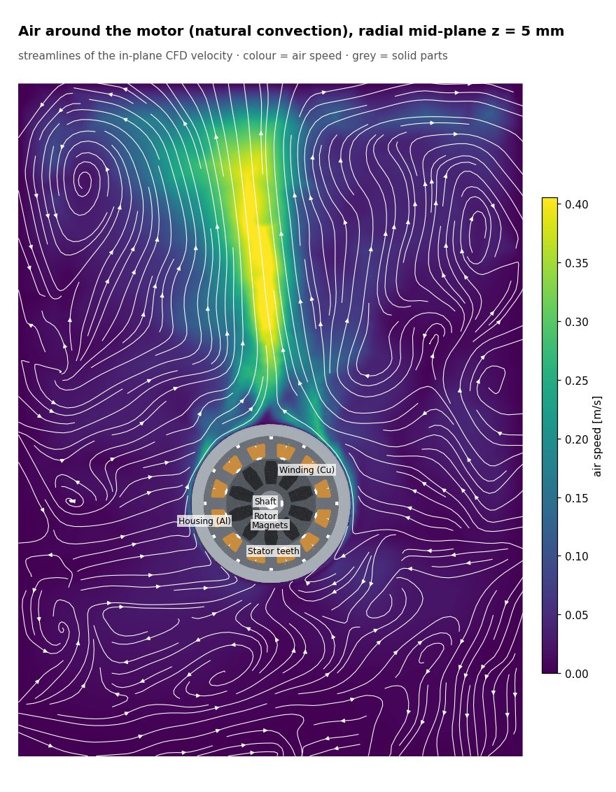
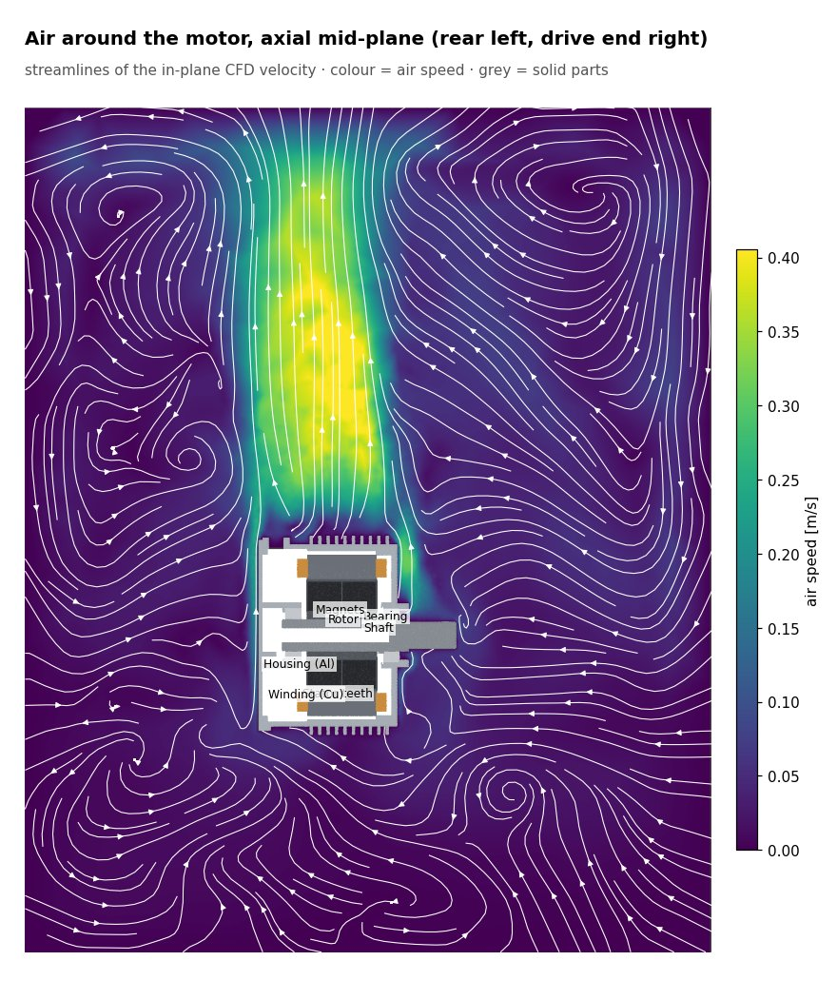
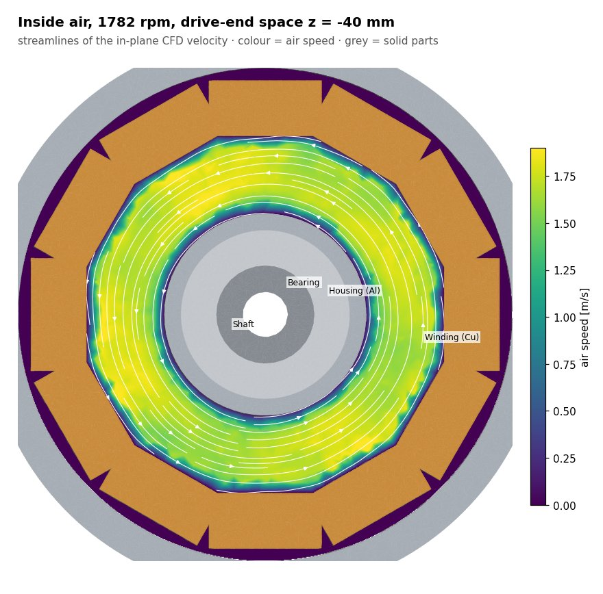
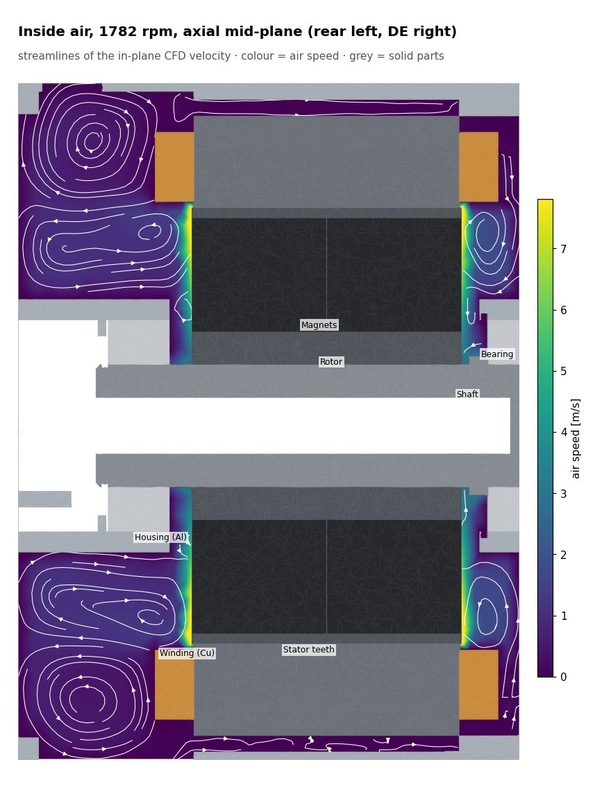
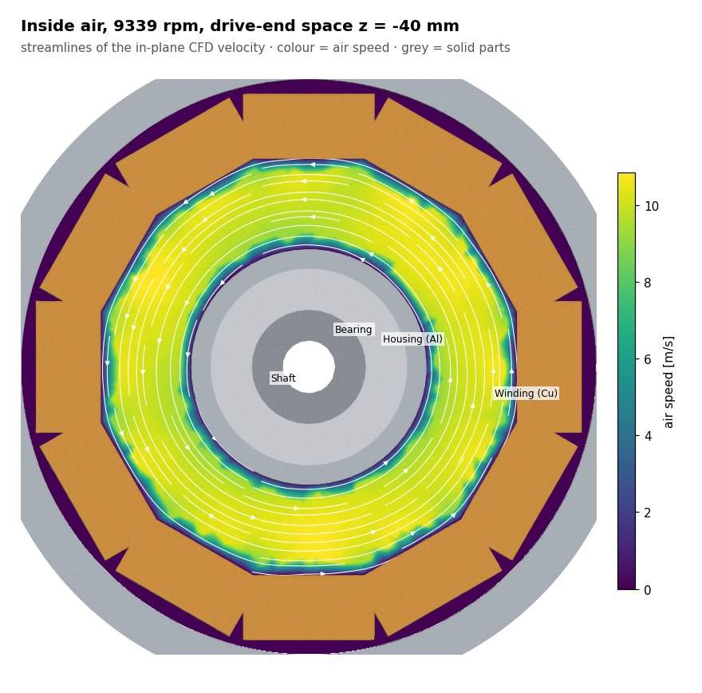
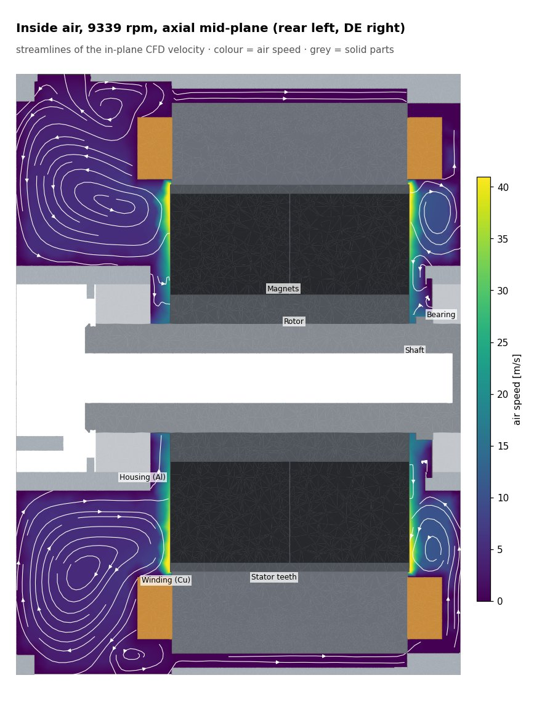

Airflow
Natural convection around the motor sets the outer cooling for every point; the internal air flow (driven by the rotor) carries heat from the end turns to the housing and grows with speed.
External
One CFD of the still air around the motor (results/air, housing at ΔT 60 K): no fan or vehicle air speed, so the same flow applies to every duty point. Its per-face heat-transfer coefficient is the outer boundary condition of every thermal run.
External air: animations and stills


Internal (per speed)
Internal air (end spaces and air gap) per speed. In the thermal runs the end-space air is a conducting solid with a speed-dependent coefficient (2.2); these CFD fields show the flow pattern behind it.
1782 rpm (used for duty1, duty3, duty5, duty2)


Animations at 1782 rpm
9339 rpm (used for duty4)
Approximate solution: upwind convection, low relaxation, residuals ~1e-3 (did not converge further at 9339 rpm); use for the flow pattern, not for exact velocities.


Animations at 9339 rpm
duty2 (2550 rpm): no separate run: the duty1 internal-air field (1782 rpm) is reused; at 2550 rpm the velocities scale with speed (×1.43) and the flow pattern is the same.
duty3 (3637 rpm): no separate run: the duty1 internal-air field (1782 rpm) is reused; at 3637 rpm the velocities scale with speed (×2.04) and the flow pattern is the same.
duty5 (1612 rpm): no separate run: the duty1 internal-air field (1782 rpm) is reused; at 1612 rpm the velocities scale with speed (×0.90) and the flow pattern is the same.